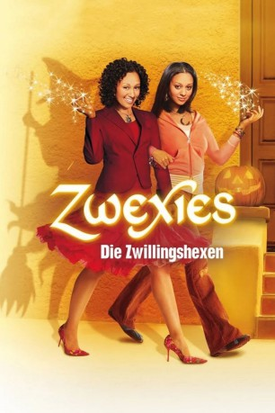
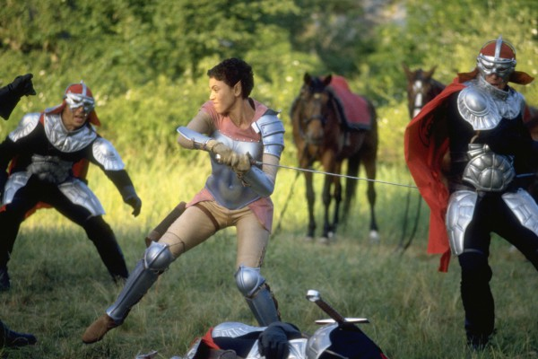

#9628 Zwexies - Die Zwillingshexen
Alternativ: Twitches
 
 IMDB-Wertung: 5.8 / 10
IMDB-Wertung: 5.8 / 10  Metascore: 0
Metascore: 0 
Die Zwillinge Alex und Camryn werden bei ihrer Geburt getrennt. Ihr Vater sendet sie aus seinem magischen Königreich Coventry auf die Erde, um sie dort vor den bösen Mächten der Dunkelheit zu bewahren. Erst an ihrem 21. Geburtstag finden die Schwestern wieder zueinander und entdecken nach und nach ihre zauberhaften Fähigkeiten. Auf der Suche nach ihrer leiblichen Mutter müssen sie erkennen, dass sie die Einzigen sind, die ihr Königreich vor dem Untergang retten können.
Jahr: 2005
Dauer: 82 Minuten
FSK:
Land: USA Studio: Disney ChannelTonspuren: DD2.0 - ,
Untertitel:
Auflösung: 1080p (1920x1080) Größe: 5089 MB
Genre: Drama, Komödie, Fantasy, Familie
Regisseur: Stuart Gillard
Drehbuch: Melissa Gould, Dan Berendsen, H.B. Gilmour, Randi Reisfeld
Soundtrack: John Van Tongeren
Darsteller:
- Tia Mowry-Hardrict als Alex Fielding / Artemis
- Tamera Mowry-Housley als Camryn Barnes / Apolla
-  Kristen Wilson als Miranda
 Patrick Fabian als Thantos
Patrick Fabian als Thantos- Jennifer Robertson als Illeana
- Pat Kelly als Karsh
- Jessica Greco als Lucinda
- Arnold Pinnock als David Barnes
 Karen Holness als Emily Barnes
Karen Holness als Emily Barnes- David Ingram als Aron
- Albert Howell als Loud Man
 Natalie Krill als Salesgirl
Natalie Krill als Salesgirl- Geri Hall als Store Manager
- Sharon McFarlane als Lucinda's Mom
- Lance Green als Fisherman
 Anna Hardwick als Talking Statue / Mime Artist
Anna Hardwick als Talking Statue / Mime Artist- Joe Cappelletti als
- Riley Raymer als Halloweener (uncredited)
- Laura Summer als Additional Voices (uncredited)
- Jackie Rosenbaum als Beth Fish
- Jessica Feliz als Nicole
- Kathryn Haggis als Housekeeper
- Lisa Ng als Partygoer
- Gabriel Plener als Zorro
- Jake Goldsbie als Teenage Trick or Treater
- Scott Fink als Fisherman
- Tim Campbell als Fisherman
- Kasia Vassos als Beautiful Woman
- Samantha Slan als School Teacher
- Zoe Aggeliki als Partygoer #2 (uncredited)
Datei: X:\2-Dilogie(N-Z)\Zwexies\Zwexies - Die Zwillingshexen (2005, FSK, 1920x1080).mkv seit 21.09.2018
Festplatte: HD Collection-2(A-Z)-3(A-M)
 Alle Filme aus Gruppe '2-Dilogie(N-Z)\Zwexies'
Alle Filme aus Gruppe '2-Dilogie(N-Z)\Zwexies'